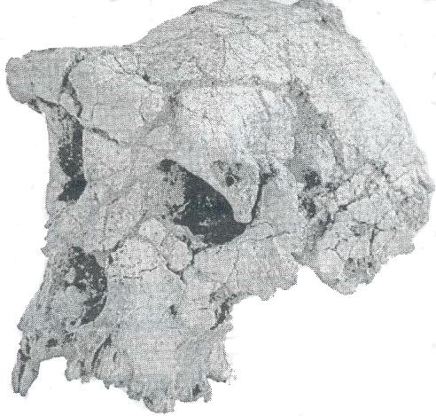

HALLADO UN CRANEO EN CHAD QUE SITÚA EL ORIGEN HUMANO EN CASI 7 MILLONES DE AÑOS
Los restos de “TOUMAÏ” alumbran el periodo de diferenciación entre el chimpancé y el hombre
Alicia Rivera.
Madrid.
Un cráneo
casi completo de un primate similar a un chimpancé, pero con algunos
rasgos humanos, de hace entre seis y siete millones de años, anuncia
una revolución en la paleoantropología. El cráneo, hallado
en Chad, es tres millones de años más antiguo que el cráneo
de homínido más viejo hasta ahora y posiblemente tiene un millón
de años más que otros restos fósiles de homínido
conocidos. Toumaï, el apodo del nuevo espécimen, tiene además
el inmenso atractivo de pertenecer a un periodo clave y oscuro de la historia
del hombre: su diferenciación del chimpancé.
El científico francés Michel Brunet (Universidad de Poitiers) y su equipo internacional encontró el cráneo en julio del año pasado en el desierto de Djurab (norte de Chad). Además de Toumai, que posiblemente pertenece a un macho, se han encontrado otros cinco fósiles (dos fragmentos de mandíbula y tres dientes) pertenecientes a diferentes individuos. Para tener una idea temporal de la antigüedad del nuevo cráneo basta recordar que los homínidos evolucionaron exclusivamente en África hasta hace unos dos millones de años (no hay fósiles anteriores fuera de ese continente) y la especie humana más antigua descubierta hasta ahora en Europa es Homo antecessor, de hace 800.000 años hallada en Atapuerca (Burgos).
La mezcla de rasgos de Toumaï, con una caja craneal simiesca y una cara de rasgos más humanos (sobre todo los dientes pequeños), es la clave que sitúa estos fósiles en la encrucijada evolutiva del origen de la humanidad. Los restos, afirman hoy en la revista Nature Brunet y sus colegas, de la Misión Paleontropológica Franco-Chadiana (MPFT), son un nuevo género y una nueva especie: Sahelantrropus tchadensis.
"No hemos encontrado piernas, y este nuevo tío, con la posición de inserción de la espina dorsal en su cabeza no demuestra que fuera bípedo, pero indica que podría serlo", comentó Brunet desde Chad en unas declaraciones distribuidas ayer por Nature. "No estamos lejos de la divergencia entre chimpancés y humanos", continúa. "Con este hallazgo tenemos el principio de un nuevo conocimiento, precisamente el principio de nuestro conocimiento del linaje humano".
Toumaï es el nombre que reciben en el desierto de Djurab los bebés que nacen justo antes de la estación seca y significa Esperanza de vida en el idioma gorán, han explicado los investigadores.
El cráneo, casi completo está relativamente bien preservado aunque tiene un aplastamiento y casi toda la parte derecha hundida .Pese a ello, los científicos han sido capaces de hacer una reconstrucción tridimensional del fósil. Así han podido calcular la capacidad craneal del animal en 350 centímetros cúbicos, similar a la de un chimpancé actual. De todas formas, Brunet y sus colegas anuncian en Nature que realizarán análisis con técnicas de imagen por tomografia computerizada para obtener una reconstrucción en tres dimensiones definitiva.
En cuanto al tamaño de Toumaï, Brunet y sus colegas estiman que sería similar al de un chimpancé, pero que no se parecería ni a este animal ni a un gorila ni a homínidos más recientes conocidos.
Los dientes de Sahelanthropus encontrados son un incisivo central superior, un canino inferior y un tercer molar superior; los seis fósiles pertenecen al menos a cinco individuos, pero la ausencia de capas geológicas asociadas a los fósiles y adecuadas para aplicar métodos de datación absoluta mediante isótopos impide determinar su edad exacta, explica en Nature el experto Bernard Wood. Para estimar la edad de los fósiles, el equipo del MPFT ha recurrido sobre todo a los restos de animales encontrados junto a los homínidos que pueden casarse con ejemplares iguales de otros yacimientos africanos bien datados.
Hace diez millones de años había muchos primates; hace cinco millones de años, había homínidos, a la vista de los fósiles descubiertos hasta ahora en diferentes lugares de África. Así que el linaje humano tuvo que separarse de los chimpancés en esos cinco millones de años intermedios. Pero desgraciadamente, sólo se ha encontrado un puñado de fósiles de homínidos de ese período clave y los paleontólogos tienen muchas dificultades para reconstruir el rompecabezas del origen del hombre. En esta sequía de restos, Toumaï, un cráneo, que siempre es la joya más preciada para un paleontólogo, resplandece de forma espectacular. 'Va a tener un impacto comparable al de una pequeña bomba nuclear", ha dicho Daniel Lieberman, de la Universidad de Harvard.
Según Brunet y sus colegas, los rasgos de Toumaï indican una relación muy próxima con el último ancestro común de chimpancés y humanos. Además, los caninos son más primitivos que los de la especie Ardipithecus (un homínido de hace entre 4,4 y 5,8 millones de años considerado de los más antiguos hasta ahora), de la que puede ser el ancestro.
«El principio del linaje del hombre»
"Es muy emocionante tener en mi mano el principio del linaje del hombre. Llevo demasiado tiempo buscándolo y sabía que algún día lo encontraría, así que es una gran parte de mi vida también”, ha dicho emocionado el paleontólogo Michael Brunet, descubridor del cráneo Toumaï en una región de África por la que muy pocos paleontólogos apostaban hace unos años como lugar interesante para encontrar restos de homínidos.
“Llevo buscando 25 años. Es mi historia, así que es una historia humana y una historia de la humanidad a la vez". Brunet, no olvida que el descubrimiento es de todo el equipo, formado por unas 40 personas (geólogos, sedimentólogo y paleontólogos) de diez países. Varios investigadores del Chad integran el grupo y se han preparado en la Universidad de Poitiers (Francia).
“El descubrimiento es un tributo a la tenacidad de Brunet, Vignaud y sus colegas científicos, y a su intrépido equipo de campo local” reconoce como homenaje, un colega destacado, Bernard Wood.
Junto con el cráneo Toumaï y el resto de los viejos huesos de homínido, los científicos han encontrado fósiles de muchos animales, unos relacionados con un medio acuático, como peces y cocodrilos, y otros con un entorno de arbolado y sabana, como primates, roedores, elefantes, équidos y bóvidos. Al relacionar esta fauna con los indicios de los sedimentos del pasado, los geólogos y paleontólogos del equipo de Brunet concluyen que estos homínidos de hace entre seis y siete millones de años vivieron en los alrededores de un lago, pero no lejos de un árido desierto. Los análisis geológicos, liderados por Patrick Vignaud (Universidad de Poitiers) se presentan también en Nature.
La zona hoy es un desierto "plano y monótono interrumpido por algunas dunas", cuentan los investigadores, pero en otros períodos aquello fue una región lacustre. Los investigadores han encontrado 700 fósiles de vertebrados asociados con Toumaï; de 42 especies, incluyendo 24 de mamíferos.
La búsqueda del eslabón perdido, un ejemplar en la historia del hombre que suponga el paso del mono al hombre, ha espoleado a los más intrépidos paleontólogos durante décadas. Pero hay que abandonar esa vieja idea popular, de la que se alejaron los especialistas hace tiempo. El mismo concepto de una cadena o una línea evolutiva desde el pasado simiesco de la especie humana hasta hoy carece de sentido, afirma Bernard Wood, antropólogo de la Universidad de Washington (EE UU).
Los paleontólogos saben, porque así lo demuestran los fósiles, que aunque ahora sólo hay en la Tierra una única especie humana, hubo en el pasado varias especies de homínidos contemporáneas.
Pero hay dos corrientes de pensamiento entre los expertos, explica Wood. Según una, que él llama lineal o limpia, las características anatómicas humanas evolucionaron sólo una vez y, a partir de ese momento, hubo una sucesión de especies descendientes una de otra hasta hace unos tres millones de años, cuando los fósiles indican que convivieron en África especies de homínidos robustas con especies gráciles.
Para los defensores del modelo alternativo (arbustivo o sucio), entre los que se incluye el propio Wood, en la evolución de los homínidos hay varias ramificaciones adaptativas en respuesta a circunstancias cambiantes. Este modelo predice que Ias adaptaciones clave de los homínidos, como el bipedismo, la destreza manual y el cerebro grande posiblemente evolucionaron más de una vez", y concluye: "Por ello, la evidencia de una o incluso varias de las presumibles características de los homínidos puede no ser suficiente para relacionar una nueva especie con homínidos posteriores, y mucho menos para identificarla como un ancestro directo de los humanos modernos".
¿Qué significa esto para entender el lugar de ToumaÏ? De espaldas, el animal parecería un chimpancé, pero de frente podría pasar por un homínido de hace 1,7 millones de años, a la vista de la estructura de su cara y de los caninos pequeños, explica Wood. Dada su edad y sus rasgos primitivos, para el modelo limpio sería el antepasado más antiguo conocido de una larga lista de otras criaturas de la línea ancestral humana.
Los partidarios del modelo sucio ven las cosas de otra manera. Hace entre seis y siete millones de años había criaturas con combinaciones de características simiescas y humanos, y tal vez algunas tendrían rasgos parecidos sin compartir necesariamente un ancestro común. "En esta perspectiva, S.Tchadensis sería un candidato a precursor humano, pero es imposible demostrarlo", dice Wood, aunque reconoce que "su potencial relación con nosotros mismos es importante".

Cráneo Toumaï
Michel Brunet
El País, 11 de
julio de 2002